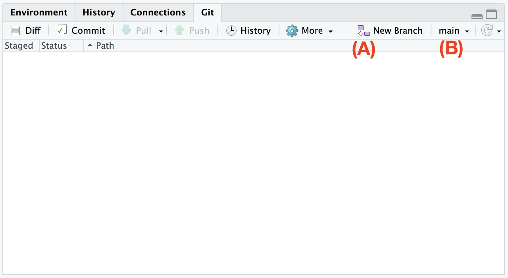
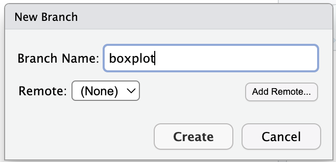
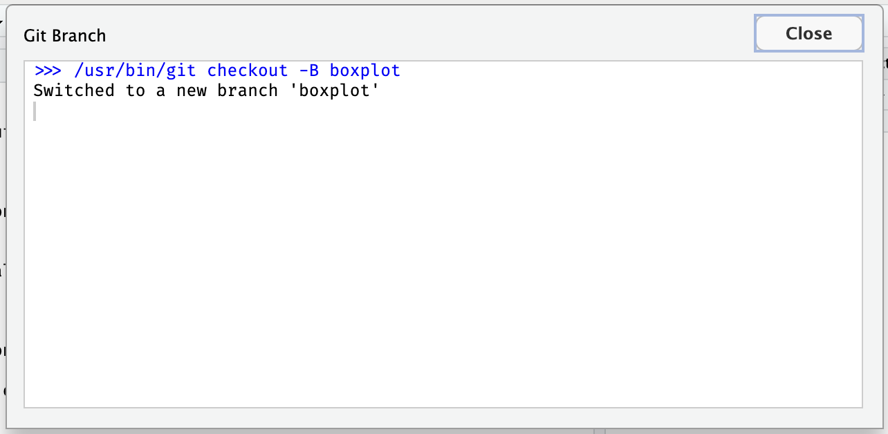
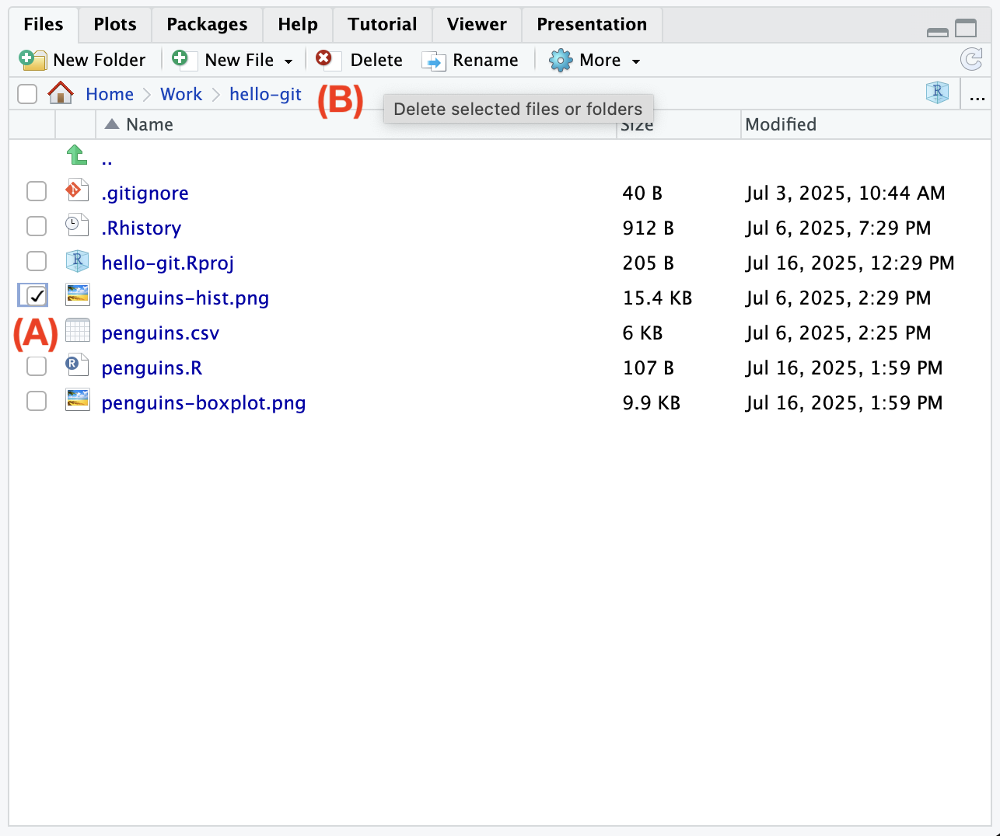
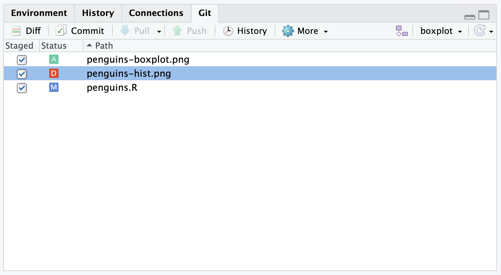
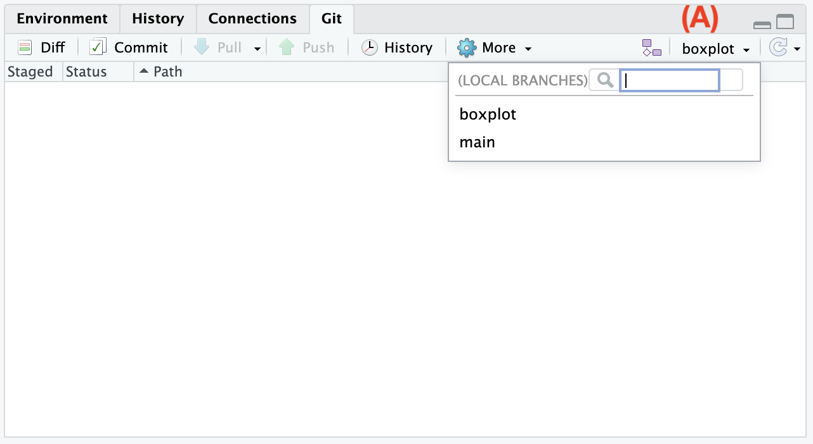
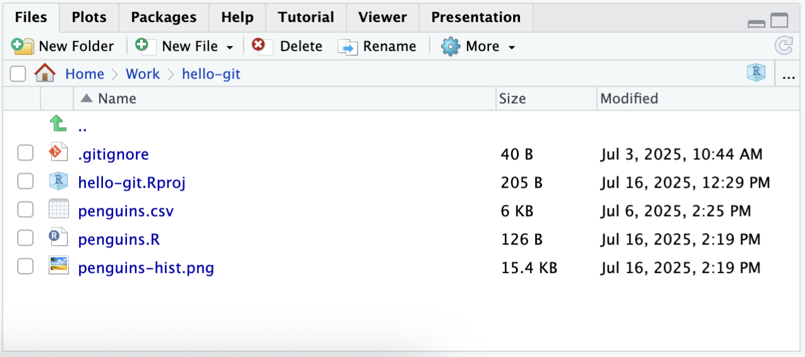
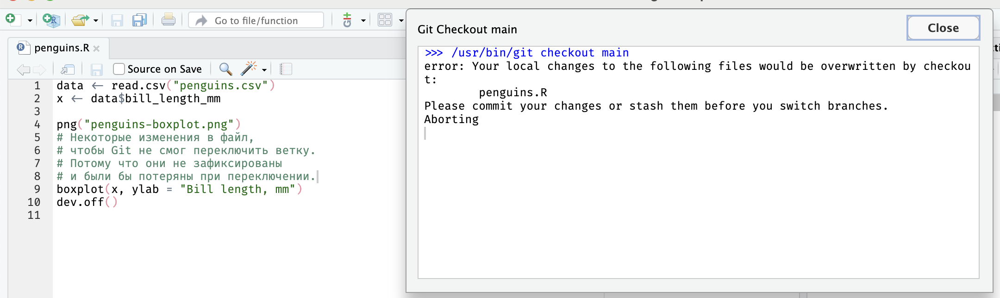

Глава 9 Ветки
До этого мы создавали версии только последовательно, чтобы записывать историю изменений. Git позволяет создавать параллельные версии. Это могут быть как версии различных участников (collaborators) с различных устройств, так и несколько альтернативных версий на одном и том же компьютере. Таким образом участники могут создавать и обмениваться различными вариантами изменений. Git позволяет эффективно объединять эти изменения, делая совместную работу комфортной, чего, к слову, не умеют облачные сервисы вроде Google Drive.
Для этого используются так называемые ветки (branch). Почему ветки? Потому что начиная с выбранной версии история разветвляется.
По умолчанию, мы работаем в ветке main
(ранее ветка по умолчанию называлась master, будьте готовы встретить и такое название).
Ее можно сравнить со стволом дерева.
В нашем проекте с пингвинами в ветке main 4 коммита, последний из которых содержит гистограмму для публикации.
Представим ситуацию — из журнала приходит ответ Рецензента 2, в котором он просит заменить гистограмму на ящик с усами. С одной стороны, можно податься в журнал, где знают, что такое гистограмма, с другой, можно хотя бы попробовать удовлетворить пожелания рецензента и, если нам не понравится новая диаграмма, просто удалить изменения.
Чтобы спокойно поэкспериментировать создадим новую ветку.
Так будет проще удалить изменения и они не будут мешать, если мы захотим поправить что-то действительно важное в основной ветке main.
9.1 Создание ветки
В RStudio нажмите кнопку New Branch (A)

В появившемся окне введите название, например boxplot и нажмите кнопку Create.
Откроется окно с сообщением, что мы переключились на ветку boxplot,
можете закрыть его кнопкой Close.


Обратите внимание, что название ветки на панели Git поменялось с main (B) на boxplot.
Вернемся к пингвинам.
Замените содержимое скрипта penguins.R на следующее:
data <- read.csv("penguins.csv")
x <- data$bill_length_mm
png("penguins-boxplot.png")
boxplot(x, ylab = "Bill length, mm")
dev.off()Сохраните файл и выполните скрипт.
Обратите внмание, что мы поменяли название файла.
Старый файл penguins-hist.png в этой версии нам не нужен и его необходимо удалить.
Благодаря механизму веток в основной ветке main он останется.
На панели Files отметьте галочкой файл penguins-hist.png (A) и нажмите кнопку Delete (B).

Отметьте все изменения для фиксации и создайте коммит. Обратите внимание, что удаление файла — это так же изменение, которое надо отметить для фиксации на панели Git.

9.2 Переключение между ветками
Для переключения нажмите на название текущей ветки на панели Git (A).
В выпадающем списке выберите нужную ветку, в нашем случае main.

Убедитесь, что код скрипта вернулся к прежнему состоянию и строит гистограмму,
а в списке файлов находится файл с гистограммой penguins-hist.png и нету файла penguins-boxplot.png.

Git откажется переключать ветку, если это приведет к потере данных.
Например, замените содержимое скрипта penguins.R на следующее:
data <- read.csv("penguins.csv")
x <- data$bill_length_mm
png("penguins-hist.png")
hist(x, breaks = seq(40, 60, 2), xlab = "Bill length, mm")
dev.off()Сохраните файл и попробуйте переключиться на ветку boxplot.
Вы получите сообщение как на скриншоте ниже.
Если бы Git переключил ветку, ему бы пришлось перезаписать файл penguins.R, в который мы внесли изменения.
Поэтому, чтобы не потерять изменения при переключении, сначала необходимо их зафиксировать создав коммит.

9.3 Слияние веток
В окне истории можно наблюдать как происходит ветвление.
Откройте окно истории и выберите в фильтре сверху показывать все ветки (all branches).
Найдите ветку boxplot как на изображении ниже.

Если мы, или другой участник проекта, решим принять эти изменения в основную ветку main,
нам нужно выполнить операцию «слияния» (merge).
В RStudio нет встроенной возможности слияния веток, это необходимо делать в терминале. К счастью, команда совсем не сложная.
Для начала переключитесь на ветку в которую будут вливаться изменения,
в нашем случае это main (см. переключение веток).
Откройте терминал 1 и введите команду
Git попытается автоматически объединить изменения в новый общий коммит.
Если в обеих ветках была отредактирована одна и та же строка, Git выдаст сообщение о конфликте - его нужно устранить, отредактировав эту строку предпочтительным образом и создать коммит вручную.
Это как раз наш случай.
На панели Git в списке изменений мы видим,
что Git автоматически выбрал изменения связанные с новым и старым файлом для графика
penguins-hist.png и penguins-boxplot.png,
но лишь частично для скрипта penguins.R.
Причина в том, что мы меняли этот файл в ветке main после коммита сделанного в ветке boxplot.

Откройте файл penguins.R.
Git любезно оставил для нас обе версии кода разделив специальными символами.
После строки <<< HEAD идет версия из текущей ветки,
строка === отделяет две версии друг от друга,
а строка >>> boxplot завершает версию из ветки boxplot.

Наша задача переписать выделенный участок в одну версию, как мы считаем нужным, и убрать спецсимволы. Важно понимать, что Git просто вставил в скрипт кусок текста, но это все еще обычный R скрипт, с которым мы работали и должны привести его в рабочее состояние.
Нам нужна версия из ветки boxplot, но мы хотим добавить в нее подпись оси, как это было сделано в ветке main.
Для этого оставим только нужную версию и удалим лишние строки (4-8 и 12).
9.4 Советы при работе с ветками
Хорошая практика каждое изменение делать в свой ветке, см. feature бранчи. Не всегда это удобно, особенно когда работаешь один. Чтобы перенести уже сделанные коммиты в отдельную ветку воспользуйтесь этим рецептом.